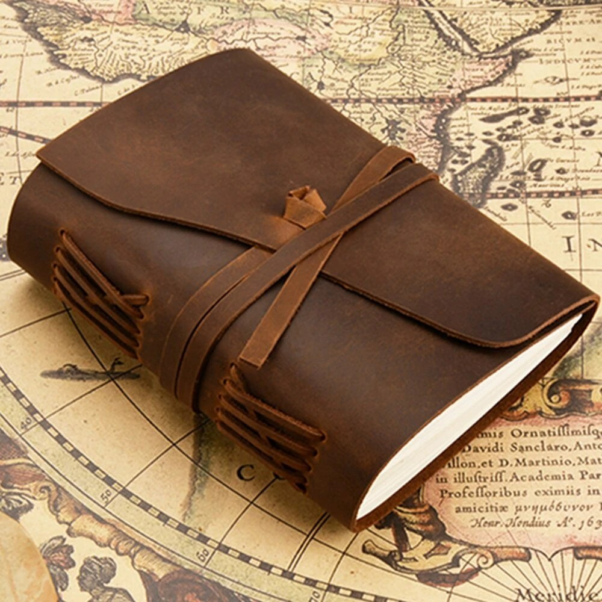
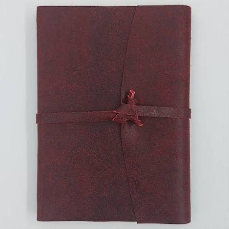
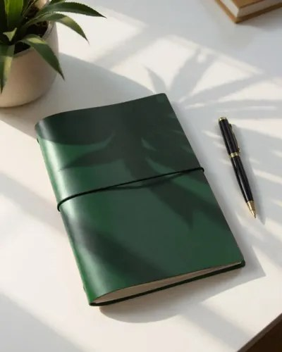
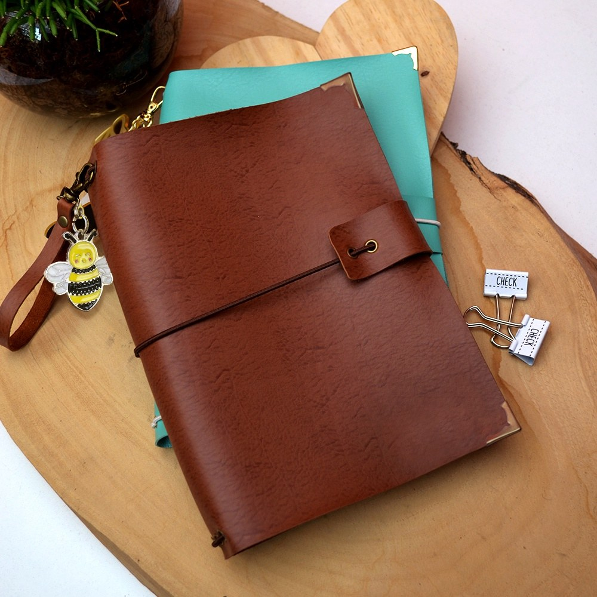

01
Dobra
As folhas são dobradas em cadernos e organizadas na ordem de leitura.
Costuramos, colamos e prensamos à mão — do caderno de uso diário à restauração de exemplares de família. Cada peça passa pelas mesmas quatro etapas que aprendemos há trinta anos.
Ver serviçosLinho beige, cor terracota
Capa dura, acabamento fosco
Percalux verde-musgo
Resistente à umidade
Papel de guarda marmorizado
Feito à mão, padrão único
Cada livro passa pela mesma sequência de trabalho, do primeiro caderno de páginas soltas até a prensa final.
01
As folhas são dobradas em cadernos e organizadas na ordem de leitura.
02
Os cadernos são costurados manualmente com fio encerado, ponto a ponto.
03
O lombo recebe cola natural, que dá firmeza sem engessar o papel.
04
O volume descansa na prensa por 24h para fixar a forma definitiva.




Levei o diário do meu avô, que estava se desfazendo, e voltou como se tivesse sido feito ontem — mas ainda com a capa original.